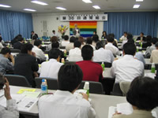
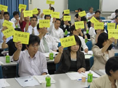

| （１） |
司会の前島常務理事が開会の挨拶を行い、総会 の代議員数が過半数を超えて成立していることを報告しました。続いて、議長に吉田代議員(さいたまコープ)と八木代議員(医療生協さいたま)が選出されました。 |
| （２） |
石川会長理事が埼玉県生協連を代表し「厳しい経営環境の中でも、組合員が192万人(７万人増加)になりました。組合員のくらしは、格差の拡大や社会保障の後退など大変厳しく、くらしに貢献できる生協となるよう発展させなければと思っています。生協法が約60年ぶりに改正されました。国会討論の中で生協の社会的役割とそれに伴う責任も一層大きくなっており、発展の基盤を法律的にも作っていくという事が必要とのことで改正につながりました。憲法改正の動きが活発になっています。憲法は国家の有り様を決める大きな性格をもっており、組合員が自主的に判断できるようなさまざまな学習の場を持っていきます」とあいさつしました。 |
 |
| （３） |
出席された来賓の皆様からご挨拶をいただきました。
はじめに埼玉県県民・消費生活課副課長の根岸秀夫様、次にＪＡ埼玉県中央会副会長の細野彦様、続けて埼玉消団連代表幹事（埼玉県地域婦人会連合会会長）の片貝弥生様よりごあいさついただきました。
|
| （４） |
伊藤専務理事より、第１号から第３号議案、第５号議案から第７号議案までの提案が行われました。
１年間を振り返り、上場企業は４年連続最高利益を更新し、それとは裏腹に組合員(国民)のくらしは非常に厳しく、収入が押し下げられている状況。くらしの問題として食料の量の確保と安全性の問題、世界共通の問題として温暖化と核戦争の危機を挙げ、運動の必要性を提起しました。課題ごとの取り組みを報告後、活動方針として、消費者の権利を確立する運動、食の安全を求める運動、生協法改正の学習と定款・規約の改正、安心してくらせる社会をめざす運動、環境・福祉・平和の運動を強めること。県行政・県議会とのパートナーシップ、消費者団体、協同組合、「NPO」諸団体などとのネットワ－クを広げることなどを提案しました。
続いて増永監事から監査報告が行われました。 |
|  |
（５） |
その後、発言申し込みにもとづき、山﨑代議員（労済生協）から「創立40周年記念事業と対面型の店舗ぐりんぼうの開設」、松井代議員（大東文化学園生協）から「学生委員会の活動」、松澤代議員（医療生協さいたま）から｢健康作りを中心にした組合員活動の1年の振り返り｣、坂本代議員（ドゥコープ）から｢2006年度活動のまとめの補足｣について発言がありました。 |
|
| （６） |
第4号議案を除く議案の採択を行い、いずれの議案も、反対・保留０、賛成多数で承認されました。
採択された議案は以下のとおりです。 |
|
議 案
|
採択の結果
|
| 第１号議案 |
2006年度活動のまとめと決算、剰余金処分案決定の件/監査報告 |
|
賛成多数で承認
|
| 第２号議案 2007年度活動方針・事業計画と予算決定の件 |
賛成多数で承認
|
| 第３号議案 2007年度借入金最高限度額決定の件 |
賛成多数で承認
|
| 第５号議案 定款改正の件 |
３分の２以上の賛成多数で承認
|
| 第６号議案 規約改正の件 |
賛成多数で承認
|
| 第７号議案 議案決議効力発生の件 |
賛成多数で承認
|
| 第８号議案 総会決議 |
拍手で承認
|
|
| （７） |
第４号議案「役員改選の件」が提案され、定数以内のため全員が当選したことが議長から宣言されました。その後、第1回理事会が開かれ、石川祐司会長理事（再任）、伊藤恭一専務理事（再任）などが互選されました。 |
| （８） |
採択の後、新・旧役員の紹介を行いました。総会役員の解任のあと、前島常務が閉会を宣言し終了しました。 |